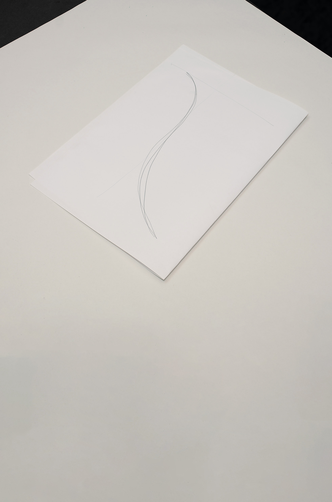
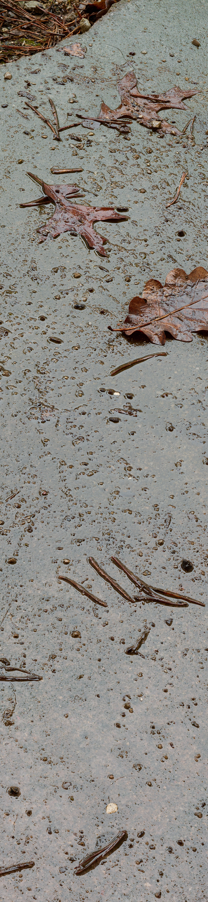

Kiesel
Schotter
Sand
Humus
Gräser
Pflanzenwurzeln
Laub
Nadeln
Wasser

umso mehr Wörter
ich spreche
desto
vielleicht
wechseln wir auch die Sprache
Hundert Schritte
eine Minute
Sinuskurve
über das Gelände legen
Gebäude als Koordinatensystem (zur Orientierung im Raum)

avec mes pieds, mes mains
les pierres, les aiguilles
touche
retouche
aussi longtemps qu'il le faudra
jusqu'à ce que je pense
qu'ils étaient déjà là sans moi